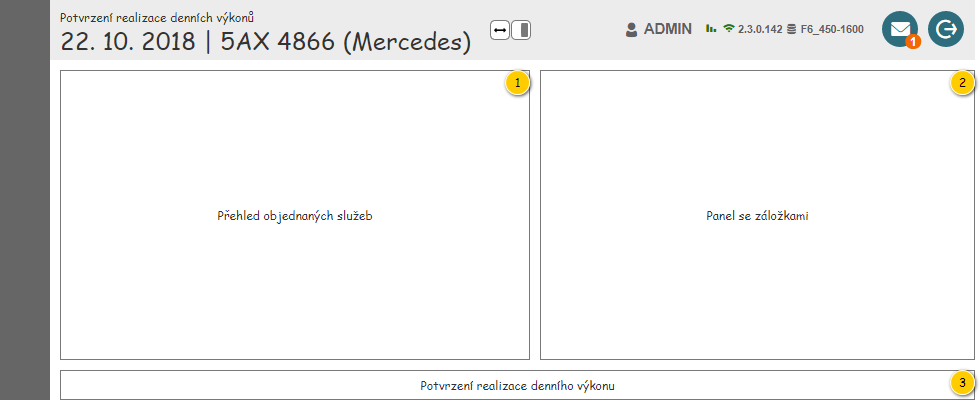
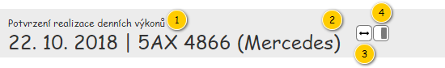
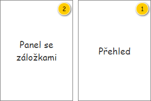
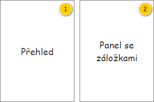
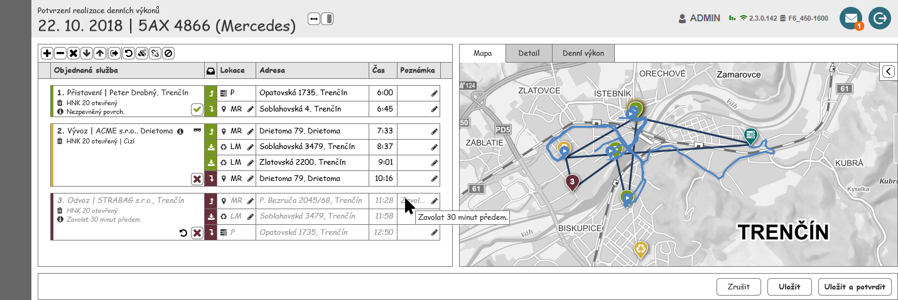

Uživatelské rozhraní slouží k potvrzení realizace Denních výkonů – v rámci obrazovky je pak zobrazena odpovídající Realizace denního výkonu, která je povinným vstupním parametrem.
Uživatelské rozhraní je tvořeno z ucelených skupin, které budou postupně popsány.

| Callout | Skupina |
|---|---|
| 1 | Přehled objednaných služeb realizace denního výkonu |
| 2 | Panel se záložkami s detailem realizace denního výkonu |
| 3 | Potvrzení realizace denního výkonu |

Nadpis obrazovky je tvořen ze dvou částí – viz tabulka.
| Callout | Hodnota | Formát |
|---|---|---|
| 1 | Potvrzení realizace denních výkonů | – |
| 2 | Entita Denní výkon – atribut Denní výkon entity Realizace denních výkonů. |
|
V rámci hlavičky aplikace jsou k dispozici tlačítka, která umožňují změnit základní rozložení obrazovky. Tlačítka jsou vložena v uvedeném pořadí za nadpis – viz tabulka. Popis chování je uveden následovně.
| Callout | Komponenta | Typ komponenty | Výchozí hodnota | ToolTip | Chování |
|---|---|---|---|---|---|
| 3 | Změnit pořadí panelů | ToggleButton
| Není stisknuto (FALSE). | Změnit pořadí panelů. | Pokud je tlačítko stisknuto (TRUE), je jako první zobrazen přehled a jako druhý panel se záložkami:  Jinak (FALSE) jsou panely zobrazeny v opačném pořadí:  Poznámka: Pořadová čísla odpovídají těm v hlavním drátovém diagramu. |
| 4 | Skrýt panel se záložkami | ToggleButton
Ikona je otočena o 90°. Ikona je pak pootočena, konkrétní úhel odpovídá aktuálnímu pořadí panelů (viz komponenta 3):
Ikona tedy koresponduje s aktuální pozicí skrývaného panelu. | Není stisknuto (FALSE). | Detail. | Pokud je tlačítko stisknuto (TRUE), je zobrazen panel se záložkami. Pokud tlačítko stisknuto není (FALSE), je panel se záložkami skrytý. |
Dále je uveden drátový diagram s náhledem celé obrazovky.
Poznámka: V rámci drátového diagramu nemusí Objednané služby v přehledu odpovídat těm na mapě.

| Skupina | Ovládací prvek | Výchozí hodnota | Poznámka |
|---|---|---|---|
| Skupiny – šířky panelů | – | – | Pokud si uživatel změní poměr velikosti mezi jednotlivými panely obrazovky, je nutné toto rozložení zachovat. Poměr je pak možné měnit mezi Přehledem objednaných služeb realizace denního výkonu a Panelem se záložkami s detailem realizace denního výkonu. Poznámka: Je potřeba počítat s tím, že uložené poměry velikosti mezi jednotlivými panely mohou být v rozporu s minimálními rozměry panelu například ve chvíli, kdy uživatel použije monitor s menším rozlišením – uložené nastavení v takovém okamžiku nemusí korespondovat s aktuálním zobrazením v prohlížeči. TODO: Upřesnit (probíhá konzultace s vývojáři). |
| Skupiny – pořadí | – | Přehled-Detail | Pokud uživatel změní pořadí jednotlivých panelů obrazovky, je nutné toto rozložení zachovat. Nastavení probíhá pomocí tlačítka v rámci hlavičky obrazovky – viz Nastavení rozložení obrazovky. |
| Panel se záložkami s detailem realizace denního výkonu – vybraná záložka | – | Mapa | Pokud uživatel změní zobrazenou záložku v panelu s detailem, je nutné toto nastavení zachovat. |
| Panel se záložkami s detailem realizace denního výkonu – zobrazení | – | Skrytý | Pokud uživatel zobrazí panel s detailem, je nutné toto nastavení zachovat. Nastavení probíhá pomocí tlačítka v rámci hlavičky obrazovky – viz Nastavení rozložení obrazovky. |
| Panel se záložkami s detailem realizace denního výkonu – mapa | Nástrojová lišta | Výchozí nastavení je uvedeno v tabulce s popisem nástrojové lišty. | Pokud uživatel změní nastavení mapy, je nutné toto nastavení zachovat. Ukládána jsou pak všechna nastavení obsažená v nástrojové liště – viz nástrojová lišta. |
| Parametr | Skupina | Hodnota | Poznámka |
|---|---|---|---|
| Realizace denního výkonu | – | Entita Realizace denního výkonu. | Jedná se o instanci, která je načtena v rámci obrazovky. |
Poznámka: Jednotlivé parametru v URL nemusí být čitelné pro lidi.
| Použití | Barva | Ikona | Výskyt | |
|---|---|---|---|---|
| Typ lokace | Místo realizace | – | ra-location | Mapa kontroly realizace denních výkonů
|
| Likvidační místo | #D5AE41 | ra-recycle | ||
| Provozovna | #006E6D | ra-list | ||
| Jiné | – | – | ||
| Časový interval | – | – | ||
| Místo dočasného uložení | – | ra-group | ||
| Akce v lokaci | Vyzvednout | – | ra-arrow-corner-up |
|
| Umístit | – | ra-arrow-corner-down | ||
| Vyprázdnit | – | ra-empty-out | ||
| Navštívit | – | ra-location | ||
| Realizace lokace | Obslouženo | #779919 | – | Mapa kontroly realizace denních výkonů
|
| Částečně obslouženo | #D5AE41 | – | ||
| Neobslouženo | #672E3B | – | ||
| Spojnice lokací v mapě | Plán | #223A5E | – | Mapa kontroly realizace denních výkonů
|
| Skutečnost | #4F84C4 | – | ||
| Ostatní | FLW událost | – | ra-play | Mapa kontroly realizace denních výkonů
|
| FOB informace o realizaci lokace objednané služby | – | ra-user | Mapa kontroly realizace denních výkonů
| |
| Nedostupná položka | #999999 | – |
| |
| Odkaz | Stručný popis změny/doplnění |
|---|---|
| Nadpis obrazovky | Změněn zdroj hodnoty pro zobrazení SPZ odpovídajícího Vozidla (naznačeno modře). |